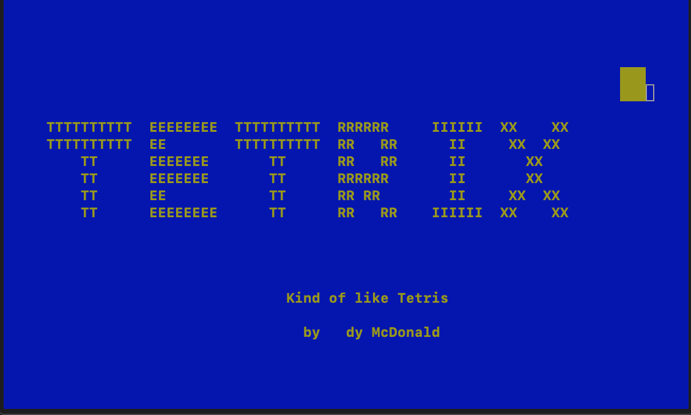
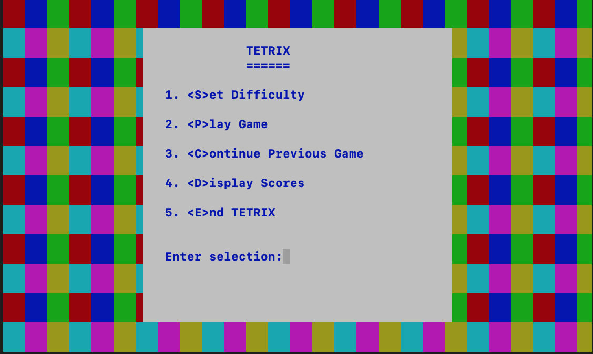
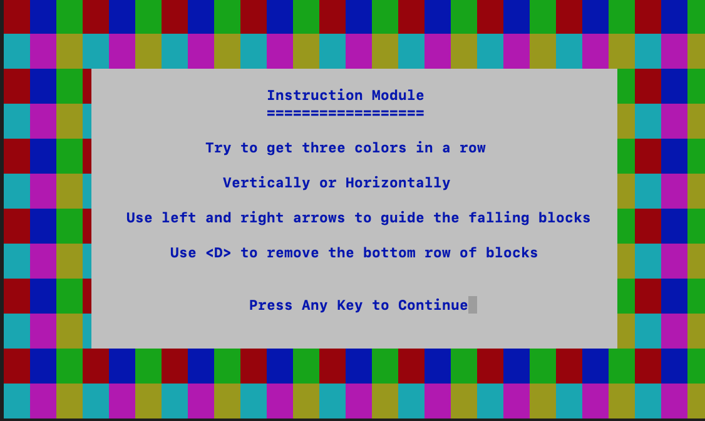
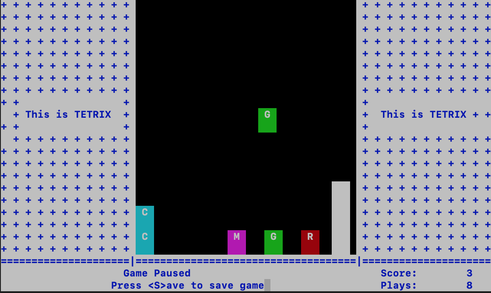
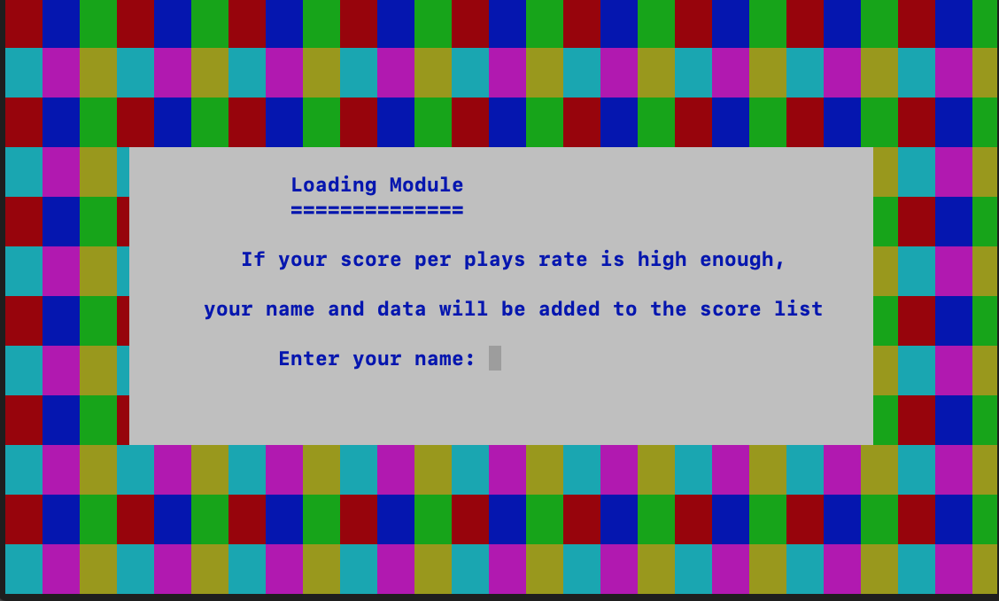

Tetrix is a game I created to become more comfortable with programming and C++ syntax. The project orginally started as a programming assignment for one of my computer science classes and was expanded upon in my free time. The repository for this code can be found here.
The objective of the game is to line up three falling blocks of the same color to score points. Blocks that are matched up become greyed out and are now unusuable for scoring. The player then has the option to delete the bottom row to make room for more blocks to be strategically placed. The goal is to be as efficient with the placement of scorings blocks and deleting the bottom row as this will affect the player's score.

Fig.1 - Tetrix splash screen with falling blocks.
The game offers several options from the start menu. Difficulty settings can be changed where the blocks fall quicker and the field is made smaller to decrease the amount of options the player has to organize the blocks. There are options to view a high-scores list or continue a previous game, however these options aren't currently functional but will be added in a later update.

Fig.2 - Main Menu.

Fig.3 - Rules Screen.

Fig.4 - Gameplay.

Fig.5 - Game over screen.
This Website!
HTML and CSS basics
This webpage was developed using an HTML template from https://startbootstrap.com, which took care of some basic mobile optimization and JS. This project taught me the basic architecture of a website and sizing parameters between different viewing medias (mobile devices and different sized monitors). Source code can be viewed here.